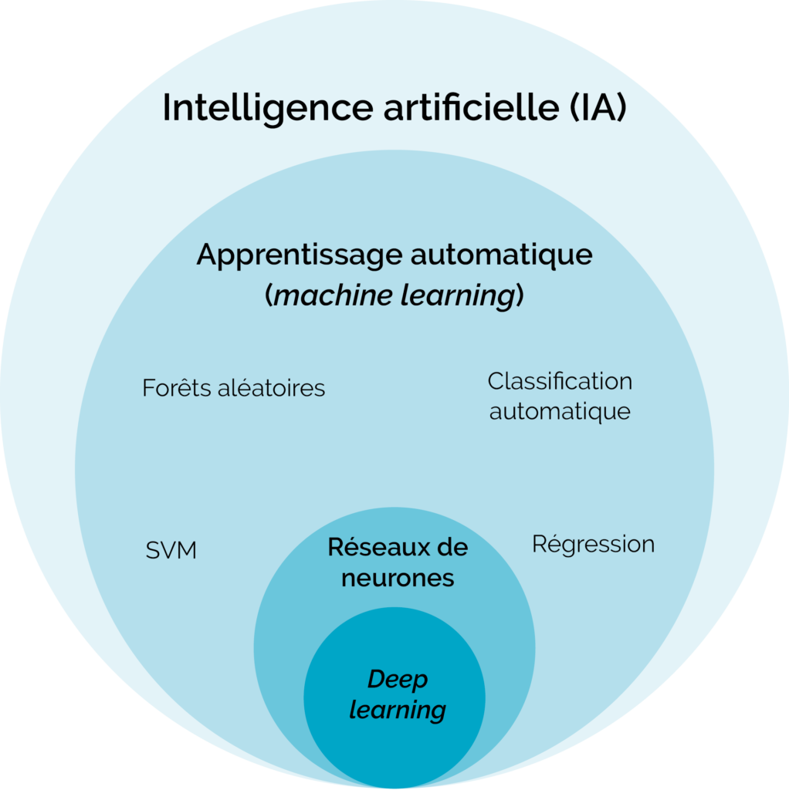

IA et activités
Nous avons beaucoup échangé et appris sur ce qu’est l’intelligence artificielle, ainsi que sur son fonctionnement et les différents métiers qui gravitent autour de ce domaine (data scientist, ingénieur IA, développeur, etc.). Ces discussions m’ont permis de mieux comprendre les bases théoriques et les applications concrètes de l’IA dans le monde professionnel.
Nous avons également réalisé plusieurs activités pratiques, comme le jeu du morpion (tic-tac-toe), développés en Python et un projet appelé “pokeepoireau”. Ces exercices avaient pour objectif de nous initier à la création d’une intelligence artificielle simple, capable de prendre des décisions et d’interagir avec un environnement de jeu. Grâce à ces projets, j’ai pu découvrir de manière concrète comment on peut commencer à programmer une IA et comprendre les logiques de base qui la composent.


À retenir
Durant le stage, on nous a expliqué comment l’IA peut être un véritable soutien dans le travail quotidien, par exemple pour apprendre plus vite, coder, ou automatiser certaines tâches. Cependant, les intervenants ont aussi insisté sur un point très important : il ne faut pas devenir dépendant de ces technologies. Il est essentiel de continuer à réfléchir par soi-même, de garder un esprit critique et de ne pas laisser l’IA remplacer totalement nos compétences.
Cette partie du stage m’a plu, car elle était très concrète et utile pour l’avenir. Elle m’a permis de mieux comprendre les enjeux actuels de l’IA et de réfléchir à la manière dont je pourrai l’utiliser intelligemment dans mes futurs projets.